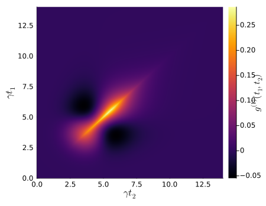
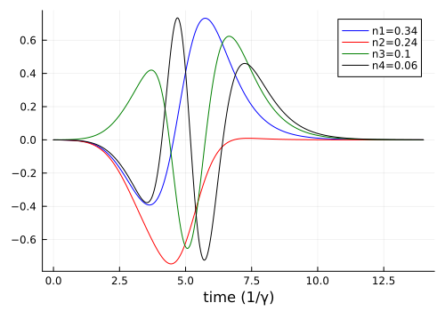

Cavity Scattering with Phase Noise
Cavity phase noise leads to scattering into several orthogonal temporal modes. In this example, we determine the four most populated modes of a single photon scattered on a one-sided cavity. The input pulse is in a Gaussian temporal mode with width $\tau$. The cavity has a decay rate of $\gamma$ and a dephasing rate of $\gamma_p$. This system is described in A. Kiilerich, et al., Phys. Rev. A 102, 023717 (2020).
We start by loading the packages and defining the symbolic operators and parameters.
using QuantumInputOutput
using SecondQuantizedAlgebra
using QuantumOptics
using QuantumOpticsBase: dagger
using Plots
using LaTeXStrings
using LinearAlgebra# symbolic Hilbert spaces
hu1 = FockSpace(:u1)
hc1 = FockSpace(:c1)
h = hu1 ⊗ hc1
# symbolic operators
au = Destroy(h, :a_u, 1)
c = Destroy(h, :c, 2)
# symbolic parameters
@variables γ::Real Δ::Real γ_p::Real g_u::Number g_v::NumberWe use the symbolic operators and parameters to define the SLH triples and cascade them to obtain the Hamiltonian and Lindblad for the system.
G_u = SLH(1, g_u'*au, 0) # input cavity
G_c = SLH(1, √(γ)*c, Δ*c'c) # scattering cavity
G_cas = ▷(G_u, G_c)H = hamiltonian(G_cas)\[ - 0.5 ~ \mathrm{conj}\left( \mathtt{g_{u}} \right) ~ \sqrt{\gamma} ~ \mathit{i} a_{\mathrm{u}}c^{\dagger} + 0.5 ~ \mathtt{g_{u}} ~ \sqrt{\gamma} ~ \mathit{i} a_{\mathrm{u}}^{\dagger}c + \Delta c^{\dagger}c\]
L = lindblad(G_cas)[1] # only one Lindblad in this example\[\mathrm{conj}\left( \mathtt{g_{u}} \right) a_{\mathrm{u}} + \sqrt{\gamma} c\]
# numerical parameters, functions and operators
γ_ = 1.0
γ_p_ = 1.5γ_
Δ_ = 0.0
p_sym = [γ, Δ, γ_p]
p_num = [γ_, Δ_, γ_p_]
dict_p = Dict(p_sym .=> p_num)
# Gaussian input pulse
τ = 1.0;
tp = 4τ
u(t) = 1/(sqrt(τ)*π^(1/4)) * exp(-(t - tp)^2 / (2*τ^2))
T = [0:0.002:1;]*14τ
ΔT = T[2] - T[1]
gu_ = coupling_input(u, T)
dict_p_t = Dict(g_u => gu_)
# numeric bases
bu1 = FockBasis(1)
bc1 = FockBasis(1)
b = bu1 ⊗ bc1
au_qo = to_numeric(au, b)
c_qo = to_numeric(c, b)
cdc_qo = c_qo'c_qo
# translate to numeric Hamiltonian and Lindblad
H_QO = to_numeric(H, b; parameter = dict_p, time_parameter = dict_p_t)
L_QO = to_numeric(L, b; parameter = dict_p, time_parameter = dict_p_t)We additionally include a cavity dephasing term and solve the dynamics.
function input_output(t, ρ)
H = H_QO(t)
J = [L_QO(t), √(γ_p_)*cdc_qo]
return H, J, dagger.(J)
end;
# time evolution
ψ0 = fockstate(bu1, 1) ⊗ fockstate(bc1, 0)
t_, ρt = timeevolution.master_dynamic(T, ψ0, input_output)We calculate the two-time autocorrelation function $g^{(1)}(t_1,t_2) = \langle L_s^\dagger(t_1) L_s(t_2) \rangle$ and diagonalize the matrix to obtain the eigenvalues with the corresponding eigenvectors. The eigenvalues correspond to the mean photon number $n_i$ in the corresponding temporal eigenvector mode $v_i$.
Ls(t) = (gu_(t))'*au_qo + √(γ_)*c_qo
g1_m = correlation_matrix(T, ρt, input_output, Ls);p = heatmap(
T,
T,
real.(g1_m);
c = :inferno,
xlabel = L"\gamma t_2",
ylabel = L"\gamma t_1",
colorbar_title = L"g^{(1)}(t_1,t_2)",
size = (450, 350),
)
p
The eigenvalues and corresponding eigenvectors are sorted in ascending order, which means the last eigenvalue corresponds to the highest populated temporal mode.
F = eigen(g1_m)
n_avg = round.(real.(F.values)*ΔT; digits = 2)
modes = F.vectors
v_t(i) = modes[:, end-i+1] / √(ΔT)colors = [:blue, :red, :green, :black]
p = plot()
for i = 1:4
plot!(p, T, real.(v_t(i)); color = colors[i], label = "n$(i)=$(n_avg[end-i+1])")
end
plot!(p; xlabel = "time (1/γ)", legend = :best, size = (500, 350))
p
We want to note that the temporal modes and average photon numbers are different to the ones in the paper A. Kiilerich, et al., Phys. Rev. A 102, 023717 (2020) due to a typo in their numerical model.
Package versions
These results were obtained using the following versions:
using InteractiveUtils
versioninfo()
using Pkg
Pkg.status(
[
"QuantumInputOutput",
"SecondQuantizedAlgebra",
"QuantumOptics",
"Plots",
"LaTeXStrings",
],
mode = PKGMODE_MANIFEST,
)Julia Version 1.12.6
Commit 15346901f00 (2026-04-09 19:20 UTC)
Build Info:
Official https://julialang.org release
Platform Info:
OS: Linux (x86_64-linux-gnu)
CPU: 4 × AMD EPYC 9V74 80-Core Processor
WORD_SIZE: 64
LLVM: libLLVM-18.1.7 (ORCJIT, znver4)
GC: Built with stock GC
Threads: 4 default, 1 interactive, 4 GC (on 4 virtual cores)
Environment:
JULIA_PKG_SERVER_REGISTRY_PREFERENCE = eager
JULIA_DEBUG = Documenter
JULIA_NUM_THREADS = auto
Status `~/work/QuantumInputOutput.jl/QuantumInputOutput.jl/docs/Manifest.toml`
[b964fa9f] LaTeXStrings v1.4.0
[91a5bcdd] Plots v1.41.6
[18f9eda6] QuantumInputOutput v0.4.0 `~/work/QuantumInputOutput.jl/QuantumInputOutput.jl`
[6e0679c1] QuantumOptics v1.2.6
[f7aa4685] SecondQuantizedAlgebra v0.10.0This page was generated using Literate.jl.